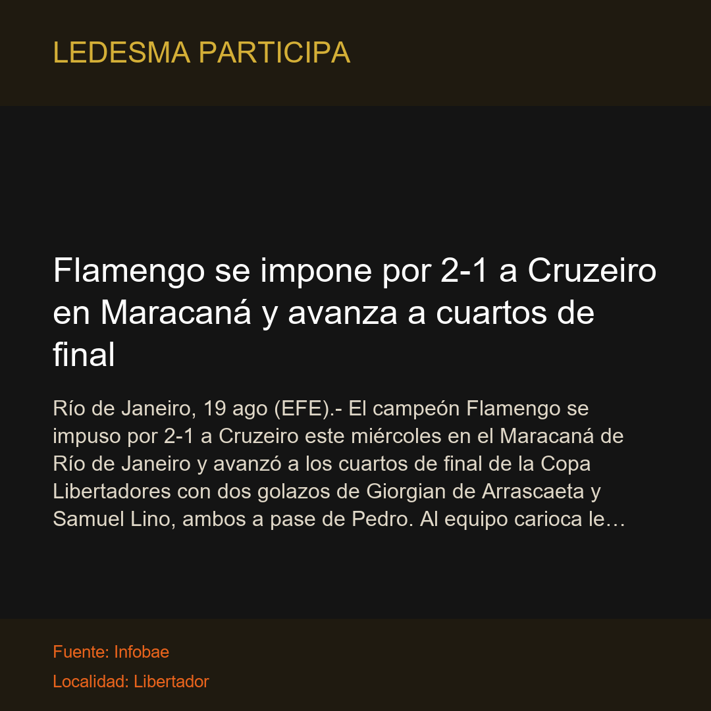

Libertador Gral. San MartínFlamengo se impone por 2-1 a Cruzeiro en Maracaná y avanza a cuartos de final
Río de Janeiro, 19 ago (EFE).- El campeón Flamengo se impuso por 2-1 a Cruzeiro este miércoles en el Maracaná de Río de Janeiro y avanzó a los cuartos de final de la Copa Libertadores con dos golazos…